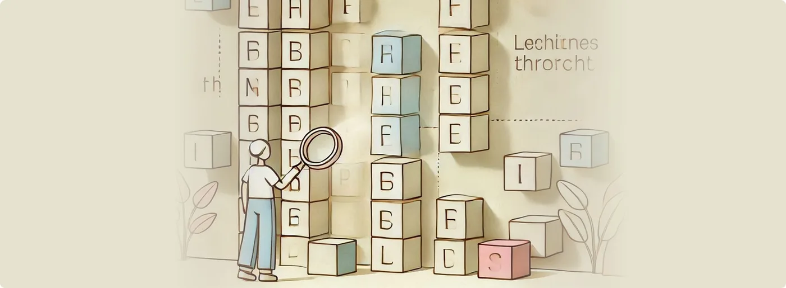

Visual Sequence Finding in Softanza
Softanza transforms string sequence finding in Haro language from a basic search operation into a visually rich experience. Let's explore its features through practical examples.
par Mansour Ayouni · dans le dépôt depuis le 2024-11-08 · essai de fonction · domaine Chaînes de caractères
Cet article est écrit en anglais, comme la bibliothèque.

Core Features
1. Basic Finding
Let's start with searching for "haro" within a jumble of letters using the straightforward Find() method, which returns the list of positions where the sequence appears:
load "stzlib.ring"
o1 = new stzString("fjharoljharodjharog")
? @@( o1.Find("haro") )
#--> [ 3, 9, 15 ]exécuté le 2026-10-08 20:45 au commit 4a184e6f0 : a tenu sa promesse
NOTE: The
@@(val)function (resembling two glasses one puts on to improve sight) returns a readable, string-based representation of the valueval, regardless of its type.
2. Visual Enhancement
We can add a visual dimension by using the viz prefix with Find(), making the positions easy to spot:
? o1.vizFind("haro")
#-->
# fjharoljharodjharog
# --^-----^-----^----exécuté le 2026-10-08 20:45 au commit 4a184e6f0 : a tenu sa promesse
3. Enhanced Visual Output
To gain even more insight, we can add the XT() suffix, providing a :Numbered guide for each matched position:
? o1.vizFindXT("haro", [ :Numbered = TRUE ])
#-->
# fjharoljharodjharog
# --^-----^-----^----
# 3 9 15exécuté le 2026-10-08 20:45 au commit 4a184e6f0 : a tenu sa promesse
NOTE: The
XT()suffix, when appended to a Softanza function, signifies an eXTended outcome of the basic feature in question. In our case, it's about providing a list of options, such as[ :Numbered = TRUE ]above, and others that we will discover later.
4. Section Finding
The FindAsSections() method (or simply FindZZ()) offers a different perspective by returning each sequence position as a pair of start and end positions:
? @@( o1.FindAsSections("haro") ) # Or simply FindZZ()
#--> [ [3, 6], [9, 12], [15, 18] ]exécuté le 2026-10-08 20:45 au commit 4a184e6f0 : a tenu sa promesse
NOTE: If you try
FindZ()instead ofFindZZ(), you'll see that bothZ()andZZ()return positions, but the first as numbers and the second as sections (pairs of numbers). Whatever your need, such smart yet powerful Softanza tiny suffixes, applied to almost any function, will have you covered!
5. Sectioned Visualization
The sections can be visualized using the :Sectioned option, which clearly shows the boundaries of each match:
? o1.vizFindXT("haro", [ :Sectioned = TRUE, :Numbered = TRUE ])
#-->
# fjharoljharodjharog
# '--' '--' '--'
# 3 6 9 12 15 18illustration
6. Full Structured Visualization
For the most sophisticated display, we can combine boxing, sectioning and numbering options to create a highly structured and detailed view:
? o1.vizFindXT("haro", [
:Boxed = TRUE,
:Rounded = TRUE,
:Sectioned = TRUE,
:Numbered = TRUE
])
#-->
╭───┬───┬───┬───┬───┬───┬───┬───┬───┬───┬───┬───┬───┬───┬───┬───┬───┬───┬───╮
│ f │ j │ r │ i │ n │ g │ l │ j │ r │ i │ n │ g │ d │ j │ r │ i │ n │ g │ g │
╰───┴───┴─•─┴───┴───┴─•─┴───┴───┴─•─┴───┴───┴─•─┴───┴───┴─•─┴───┴───┴─•─┴───╯
'-----------' '-----------' '-----------'
3 6 9 12 15 18illustration
NOTE: If you try
:NumberedXT = TRUEinstead of just:Numbered = TRUE, you'll see that the XT suffix forces the display of positions for all the characters, not just the sections defined, which can be useful in some cases.
Why It Matters
Technical Excellence
- Minimal design and execution overhead through a pure declarative experience
- Progressive visualization from basic positions to sectioned views
- Multiple representation options (positions, sections, visual markers, chars boxes)
- Flexible customization through combined options and smart defaults
Development Impact
- Debugging: Instant visual identification of sequences and their boundaries
- Analysis: Clear representation of sequence positions and sections
- Documentation: Professional, readable output with multiple visualization options
- Teaching: Intuitive demonstration of string concepts and sequence locations
Design Philosophy: The Visual Approach in Softanza
The sequence finding feature demonstrates Softanza's core design philosophy: transforming console output into meaningful visual representations. This approach:
- Makes Operations Visible: Each visualization carries clear meaning about the operation being performed - sections show boundaries, numbers provide precise positions, and box drawings create structure
- Leverages Console Power: Rich visual feedback without GUI libraries, using just ASCII and Unicode thoughtfully
- Sets a Pattern: The visual elements introduced here (markers, sections, boxes) establish a language that extends to other Softanza operations with lists, grids, and more
Conculsion
Softanza sequence finding solution showcases how console output can be both beautiful and deeply functional, making abstract algorithmic operations immediately understandable.
Citer
Mansour Ayouni. « Visual Sequence Finding in Softanza ». Softanza narrations, 2024. https://mayouni.github.io/stzsite/fr/narrations/stzstring-vizfind-narration.html
Exécuté au nom de Haro le 2026-10-08 20:45 dans la bibliothèque au commit 4a184e6f0, bloc après bloc dans un seul processus : 4 bloc(s) sur 6 ont tenu leur promesse ; les autres sont des illustrations. Le code des articles est du code Haro. Là où un article a été écrit avant que la langue prenne son nom actuel, le nom a été changé et rien d'autre. Genre, domaine et série lus dans le nom du fichier, année tirée du premier commit : dérivés, jusqu'à ce que l'article porte son propre en-tête. Le fichier sur GitHub(s'ouvre dans un nouvel onglet)